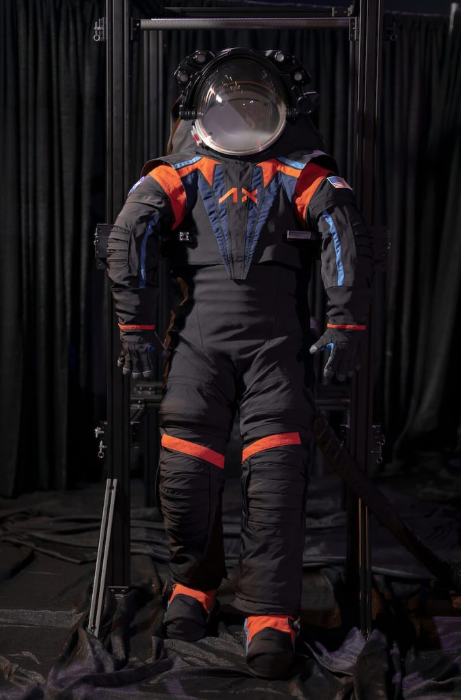

အခု ဝတ်စုံကို နာဆာ အဖွဲ့ကြီး နဲ့ Axiom Space Inc. တို့ ပူးပေါင်းပြီး တီထွင်ဖန်တီးထားတာ ဖြစ်ပါတယ်။ အခု ထုတ်ဖော်ပြသတဲ့ ဝတ်စုံဟာ ဝတ်စုံပြည့် မဟုတ်သေးပဲ အကြို နမူနာ ဝတ်စုံသာ ဖြစ်တယ်လို့ ဆိုပါတယ်။
အပြည့်အစုံ ပြီးစီးသွားတဲ့ ဝတ်စုံကို လကမ္ဘာပေါ် ဆင်းသက်မယ့် အာကာသ ယာဉ်မှူးတွေ ဝတ်ဆင်ကြမှာ ဖြစ်ပါတယ်။
အာတီးမီးစ် (Artemis mission) ယာဉ်မှူးတွေ ဝတ်ဆင်ကြမယ့် အာကာသ ဝတ်စုံကို ပြီးခဲ့တဲ့ ရက်ပိုင်းက ဟူစတန် မှာရှိတဲ့ ဂျွန်ဆန် မြေပြင် အခြေစိုက် စခန်း (Johnson Space Center in Houston) မှာ ပြုလုပ်တဲ့ အခမ်းအနားမှာ ထုတ်ဖော် ပြသခဲ့တာ ဖြစ်ပါတယ်။
Axiom Space က ထုတ်ပြန်တဲ့ သတင်းထုတ်ပြန်ချက်မှာ “လပေါ်မှာ ဝတ်ဆင်တဲ့ ဝတ်စုံဟာ အပူကို ရောင်ပြန်နိုင်ဖို့ အဖြူရောင် ဖြစ်ဖို့ လိုအပ်ပါတယ်။ ဒါ့ကြောင့် အခု ဝတ်စုံကို အပေါ်က အုပ်ထားတဲ့ အလွှာတစ်ခု ထည့်သွင်း ပြသ ထားပါတယ်။ ဒါဟာ ဝတ်စုံရဲ့ တကယ့် ဒီဇိုင်းကို ဖုံးကွယ်ဖို့ ယာယီ ဖုံးအုပ်ထားတဲ့ အပေါ်လွှာ အကာသာ ဖြစ်ပါတယ်” လို့ ရေးသား ထားပါတယ်။
ဒါပေမယ့် ပြသထားတဲ့ ဝတ်စုံကို လေ့လာချက် အရ ဒီ ဝတ်စုံဟာ ယခင် အာကာသ ဝတ်စုံတွေနဲ့ ယှဉ်ရင် ပိုပြီး လှုပ်ရှားသွားလာဖို့ ပိုမို လွယ်ကူမယ်လို့ ယူဆရပါတယ်။
ယခင် ဝတ်ဆင်ခဲ့တဲ့ အပိုလို စီမံကိန်း ကာလ အာကာသ ဝတ်စုံတွေနဲ့ ယှဉ်ယှဉ်၊ လက်ရှိ အပြည်ပြည်ဆိုင်ရာ အာကာသ စခန်းက အာကာသ ယာဉ်မှူးတွေ ဝတ်တဲ့ အာကာသ ဝတ်စုံနဲ့ပဲ ယှဉ်ယှဉ် ဝတ်စုံသစ်ကို ပိုပြီး လှုပ်ရှားသွားလာ ပြုလုပ်ဖို့ ပိုမို လွယ်ကူစေမယ်လို့ ဆိုပါတယ်။
“Axiom Space ဟာ နာဆာက ကောက်ယူခဲ့တဲ့ အချက်အလက် တွေနဲ့ ပြုလုပ်ခဲ့တဲ့ သုတေသန ရလဒ်တွေကို အသုံးပြုပြီး ပိုမို အလုပ်ဖြစ်မယ့် အာကာသ ဝတ်စုံ တစ်စုံကို ထုတ်လုပ် ဖန်တီးခဲ့ပါတယ်။ ကျွန်တော်တို့ဟာ သူတို့ (Axiom Space) နဲ့ ဆက်လက် လက်တွဲပူးပေါင်းပြီး စိတ်ချရတဲ့ အာကာသ ဝတ်စုံတစ်စုံ ရရှိသည် အထိ ကြိုးပမ်းသွားမှာ ဖြစ်ပါတယ်” လို့ မိန့်ခွန်းမှာ ထည့်သွင်း ပြောကြားသွားပါတယ်။
အခု အခမ်းအနားမှာ Axiom Space ရဲ့ အင်ဂျင်နီယာ တစ်ဦးဖြစ်သူ ဂျင်မ်စတိမ်း (Jim Stein) က နမူနာ အာကာသ ဝတ်စုံကို ဝတ်ဆင်ပြီး သရုပ်ပြသ ခဲ့ပါတယ်။ ဒီဝတ်စုံကို ဝတ်ဆင်ပြီး လမ်းလျှောက်ခြင်း၊ ဆောင့်ကြောင့်ထိုင်ခြင်း၊ ခုန်ခြင်း၊ ဒူးထောက်ခြင်း နဲ့ အခြား လှုပ်ရှားမှု အမျိုးစုံကို ပြုလုပ် ပြသ ခဲ့ပါတယ်။
“ဒါဟာ အပိုလို ဝတ်စုံနဲ့ ယှဉ်ရင် အများကြီး တိုးတက် လာတာ ဖြစ်ပါတယ်။ အာတီးမီးစ် ယာဉ်မှူးတွေဟာ ပိုပြီး သက်တောင့်သက်သာ လှုပ်ရှားနိုင်ကြမှာ ဖြစ်ပါတယ်။ ဥပမာ ကျောက်တုံးတွေ ကုန်းကောက်တာ မျိုးပေါ့” လို့ Axiom Space ရဲ့ ဒုတိယ စီမံကိန်း မန်နေဂျာ (deputy program manager for Extravehicular Activity) တစ်ဦး ဖြစ်သူ Russell Ralston က မှတ်ချက်ပြုပါတယ်။
နာဆာရဲ့ စမ်းသပ် ဝတ်စုံကို အခြေခံပြီး နောက်ဆုံးပေါ် နည်းပညာ တွေ ပေါင်းစပ် ထည့်သွင်း တည်ဆောက်ထားတဲ့ ဒီ ဝတ်စုံဟာ လှုပ်ရှားနိုင်စွမ်း ပိုမို ကောင်းမွန်ရုံသာ မက လပေါ်မှာ ကျရောက်နိုင်မယ့် အန္တရာယ် တွေကနေ ကာကွယ်ရေး နည်းစနစ် တွေလဲ ထည့်သွင်း တည်ဆောက် ထားပါတယ်။
အာတီးမီစ် စီမံကိန်းဟာ ပထမဆုံး အမျိုးသမီး အာကာသ ယာဉ်မှူး တစ်ဦး နဲ့ လူဖြူ မဟုတ်တဲ့ အာကာသ ယာဉ်မှူး တစ်ဦးတို့ကို လပေါ်မှာ ခြေချနိုင်ဖို့ စီမံ နေပါတယ်။ ဒီ ယာဉ်မှူးတွေ သယ်ဆောင်သွားမယ့် အာတီးမီးစ် အမှတ် ၃ စီမံကိန်း (The Artemis III mission) ကို လာမယ့် ၂၀၂၅ ခုနှစ်အတွင်း လွှတ်တင်ဖို့ ကြိုးစား နေပါတယ်။
ယခင် နာဆာရဲ့ အာကာသ ဝတ်စုံတွေနဲ့ မတူတာ ကတော့ အခု AxEMU ဝတ်စုံသစ်ဟာ အပေါ်အောက် တဆက်တစပ်ထဲ ချုပ်ထားတဲ့ ဝတ်စုံ ဖြစ်နေတာပဲ ဖြစ်ပါတယ်။ ပြီးတော့ ဝတ်စုံထဲကို ဝင်မယ့် ဝင်ပေါက်ကိုလဲ အနောက်ဖက်မှာ ဖေါက်လုပ် ထားပါတယ်။ ဝတ်ဆင်မယ့် အာကာသ ယာဉ်မှူးဟာ ဝတ်စုံရဲ့ နောက်ကျောက အပေါက်ထဲကို ခြေထောက်ထိုးထည့်ပြီး ဝတ်စုံကို ဝတ်ဆင်ရမှာ ဖြစ်ပါတယ်။
ခြေလက်တွေကိုတော့ လှုပ်ရှားရ လွယ်အောင် အဆစ်တွေနဲ့ ချုပ်လုပ် ထားပါတယ်။ ခြေလက်တွေကို လိုသလို ပြောင်းလဲ တပ်ဆင်နိုင်မယ် လို့လဲ သိရပါတယ်။
အသက်ရှူ အောက်စီဂျင် ထုတ်ပေးမယ့် စက်ကိုတော့ ကျော့ပေါ်မှာ တပ်ဆင် ထားပါတယ်။ ဒီ ကျောပိုးစက်က အသက်ရှူမယ့် အောက်ဆီဂျင် အပြင် အပူအအေး ထိန်းပေးတဲ့ စနစ်ကိုလဲ တပ်ဆင် ထားပါတယ်။ ဒါ့အပြင် အစားအသောက်နဲ့ ရေ ပမာဏ အနည်းငယ် ကိုလဲသယ်ဆောင်နိုင်မှာ ဖြစ်ပါတယ်။
ခေါင်းဆောင်းကိုတော့ ဝတ်စုံရဲ့ လည်ပင်းဖက်မှာ တပ်ဆင်ရမှာ ဖြစ်ပါတယ်။ ဒီ ခေါင်းဆောင်းရဲ့ အပေါ်ဖက်မှာ ညဖက် အသုံးပြုဖို့ ဓါတ်မီးကို တပ်ဆင်ထားမှာ ဖြစ်ပါတယ်။ နောက်ပြီး HD ကင်မရာ နဲ့ ရုပ်သံလွှင်စက်် ကိုလဲ ခေါင်းဆောင်းရဲ့ အပေါ်မှာ တပ်ဆင်သွားမှာ ဖြစ်ပါတယ်။
အခု အာကာသ ဝတ်စုံ ဖန်တီးရာမှာ နာဆာက ၁၀ နှစ်ကျော် ကြာအောင် ပြုလုပ်ခဲ့တဲ့ အာကာသ ဝတ်စုံဆိုင်ရာ သုတေသန ရလဒ်တွေကို ထည့်သွင်း ဖန်တီး ထားပါတယ်။
လပေါ်မှာ ဝတ်ဆင်မယ့် အာကာသ ဝတ်စုံဟာ စံနှုန်း အများအပြားကို ပြည့်မှီဖို့ လိုအပ်ပါတယ်။ လဟာ ကြမ်းတမ်းတဲ့ နေရာ ဒေသတစ်ခု ဖြစ်ပါတယ်။ အထူးသဖြင့် နာဆာယာဉ်မှူးတွေ ဆင်းသက်မယ့် တောင်ဝင်ရိုးစွန်း ဒေသဟာ ပိုပြီးတော့တောင် ခက်ခဲ ကြမ်းတမ်းပါတယ်။ အထူးသဖြင့် အပူအအေး လွန်ကဲမှု ပြင်းထန်ခြင်းကြောင့် အာကာသ ဝတ်စုံတွေ အနေနဲ့ ဒီ အပူအအေးဒါဏ်ကို ခံနိုင်ဖို့ လိုအပ်မှာ ဖြစ်ပါတယ်။
ယခု ဝတ်စုံကို အပေါ်ကနေ အရောင်ရင့်ရင့် ဝတ်စုံနဲ့ အုပ်ထားတာမို့ အတွင်းမှာ ဝတ်ထားတဲ့ တကယ့် ဝတ်စုံကိုတော့ တွေ့မြင်ရခြင်း မရှိသေးပါဘူး။
